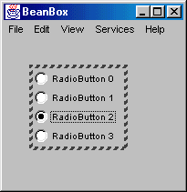

46.5 Panel-Beans
Die bisherigen Beans waren aus Canvas
abgeleitet und repräsentierten damit elementare Komponenten.
Ebenso leicht ist es möglich, zusammengesetzte Komponenten
als Beans zu definieren und so größere Programmeinheiten
wiederverwendbar zu machen.
Wird eine Bean beispielsweise aus der Klasse Panel
abgeleitet, können darauf vordefinierte Dialogelemente platziert
und mit Hilfe von setter-Methoden konfigurierbar gemacht werden. Im
GUI-Designer erscheinen die unterschiedlichen Dialogelemente dann
wie ein einziges. Meist spielt die Bean auch noch die Rolle eines
Ereigniskonzentrators, d.h., sie registriert sich als Listener
bei ihren eigenen Komponenten und verarbeitet diese so weit wie möglich
selbst. Nach außen hin definiert sie ein abstrakteres Event-Modell,
das an die Bedürfnisse der Gesamtkomponente angepasst ist. Statt
den Client mit den Elementarereignissen der einzelnen Komponenten
zu belasten, sendet sie nur noch Ereignisse, die das Verhalten der
zusammengesetzten Komponente repräsentieren.
Die Konstruktion einer Panel-Bean ist prinzipiell nicht schwieriger
als die einer einfachen Bean. Zusätzlicher Aufwand wird allerdings
erforderlich, wenn die Eigenschaften der darin enthaltenen Komponenten
zum Designzeitpunkt nicht mit einfachen getter- und setter-Methoden
erledigt werden können. Die meisten Entwickler erwarten heute
beispielsweise von einem Splitpanel (eine typische Panel-Bean), dass
im GUI-Designer die einzelnen Komponenten per Drag-and-Drop darauf
platziert werden können.
So weit wollen wir allerdings nicht in die Bean-Programmierung vordringen.
Wir wollen nur die Grundprinzipien erklären und eine Klasse ButtonPanel
entwickeln, die eine Gruppe von Radiobuttons kapselt. Die Anzahl der
Radiobuttons, ihre Beschriftung und die Auswahl des selektierten Elements
sollen frei definiert werden können. Ändert sich die Anzahl
der Buttons oder wird ein anderer Button selektiert, soll die Bean
ein PropertyChangeEvent
versenden.
Das folgende Listing zeigt den Code für diese Klasse:
001 /* ButtonPanel.java */
002
003 import java.awt.*;
004 import java.awt.event.*;
005 import java.beans.*;
006 import java.io.*;
007
008 public class ButtonPanel
009 extends Panel
010 implements Serializable, ItemListener
011 {
012 //---Instanzvariablen------------------------------------
013 protected CheckboxGroup cbg;
014 protected Checkbox[] cb;
015 transient protected PropertyChangeSupport pcs;
016
017 //---Methoden--------------------------------------------
018 public ButtonPanel()
019 {
020 cbg = new CheckboxGroup();
021 cb = new Checkbox[0];
022 initTransientState();
023 }
024
025 //---Anzahl der RadioButtons-----------------------------
026 public void setButtonCnt(int cnt)
027 {
028 if (cnt != cb.length) {
029 int oldvalue = cb.length;
030 //Bisherige Buttons entfernen
031 if (cb.length > 0) {
032 removeAll();
033 }
034 cb = new Checkbox[cnt];
035 setLayout(new GridLayout(cnt, 1));
036 for (int i = 0; i < cnt; ++i) {
037 cb[i] = new Checkbox(
038 "RadioButton " + i,
039 cbg,
040 (i == 0 ? true : false)
041 );
042 cb[i].addItemListener(this);
043 add(cb[i]);
044 }
045 //PropertyChangeEvents senden
046 pcs.firePropertyChange("buttonCnt", oldvalue, cnt);
047 if (cnt > 0) {
048 setSelected(0);
049 }
050 //Neu layouten
051 setSize(getPreferredSize());
052 invalidate();
053 doLayout();
054 Container owner = getParent();
055 if (owner != null) {
056 owner.invalidate();
057 owner.doLayout();
058 }
059 }
060 }
061
062 public int getButtonCnt()
063 {
064 return cb.length;
065 }
066
067 //---Beschriftung der Buttons----------------------------
068 public void setLabel(int index, String label)
069 {
070 if (index >= 0 && index < cb.length) {
071 cb[index].setLabel(label);
072 }
073 }
074
075 public String getLabel(int index)
076 {
077 String ret = "***invalid index***";
078 if (index >= 0 && index < cb.length) {
079 ret = cb[index].getLabel();
080 }
081 return ret;
082 }
083
084 //---Selektiertes Element--------------------------------
085 public void setSelected(int index)
086 {
087 if (index >= 0 && index < cb.length) {
088 int oldvalue = getSelected();
089 cb[index].setState(true);
090 pcs.firePropertyChange("selected", oldvalue, index);
091 }
092 }
093
094 public int getSelected()
095 {
096 int ret = -1;
097 for (int i = 0; i < cb.length; ++i) {
098 if (cb[i].getState()) {
099 ret = i;
100 break;
101 }
102 }
103 return ret;
104 }
105
106 //---Verwaltung der PropertyChangeListener---
107 public void addPropertyChangeListener(
108 PropertyChangeListener l
109 )
110 {
111 pcs.addPropertyChangeListener(l);
112 }
113
114 public void removePropertyChangeListener(
115 PropertyChangeListener l
116 )
117 {
118 pcs.removePropertyChangeListener(l);
119 }
120
121 //---Reaktion auf Zustandsänderungen---------------------
122 public void itemStateChanged(ItemEvent event)
123 {
124 Checkbox changedcb = (Checkbox) event.getItemSelectable();
125 if (changedcb.getState()) {
126 for (int i = 0; i < cb.length; ++i) {
127 if (cb[i] == changedcb) {
128 pcs.firePropertyChange("selected", -1, i);
129 break;
130 }
131 }
132 }
133 }
134
135 //---Private Methoden------------------------------------
136 /**
137 * Initialisierung der nichtpersistenten Instanzvariablen.
138 */
139 private void initTransientState()
140 {
141 pcs = new PropertyChangeSupport(this);
142 }
143
144 /**
145 * Wird überlagert, um nach dem Deserialisieren den transienten
146 * Zustand zu initialisieren.
147 */
148 private void readObject(ObjectInputStream stream)
149 throws IOException, ClassNotFoundException
150 {
151 stream.defaultReadObject();
152 initTransientState();
153 }
154 }
|
ButtonPanel.java |
Listing 46.9: Die Klasse ButtonPanel
Die Bean verwaltet die Radionbuttons in dem Array cbg,
das zunächst leer ist. Verändert sich ihre Anzahl durch
Aufruf von setButtonCnt, werden
alle bisherigen Buttons entfernt, neue in der gewünschten Anzahl
angelegt und die registrierten Listener über die Änderung
benachrichtigt. Zunächst haben die Buttons die Beschriftung »RadioButton
1«, »RadioButton 2« usw. Sie kann durch Aufruf von
setLabel geändert werden.
Der Zugriff auf das selektierte Element erfolgt mit getSelected
und setSelected.
Um benachrichtigt zu werden, wenn der Benutzer per Mausklick die Selektion
ändert, registriert sich die Bean in Zeile 042
als ItemListener
bei den von ihr erzeugten Radiobuttons. Dadurch wird bei jeder Änderung
die Methode itemStateChanged
aufgerufen und die Bean kann ihrerseits ein PropertyChangeEvent
an alle registrierten Listener versenden.
Abbildung 46.7 zeigt
ein ButtonPanel mit vier Radiobuttons
in der Beanbox:

Abbildung 46.7: Das ButtonPanel in der BeanBox